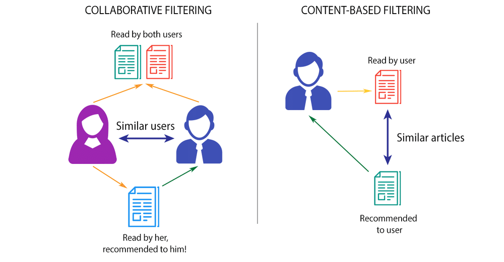

Projet
WildFlix - App web de recommandation de films
Objectif : concevoir une application capable de recommander 5 films a partir d'un titre saisi, et livrer des dashboards analytiques (Power BI et Python) pour piloter la qualite des donnees et les KPIs du catalogue.
Brief WildFlix
Brief du projet
WildFlix - Systeme de recommandation de films
Source (brief original) : patrick-wampe.github.io/Synapse-Learners
Introduction

« Netflix est un service de diffusion en streaming qui permet à ses membres de regarder une grande variété de séries TV, films, documentaires, etc. sur des milliers d'appareils connectés à Internet. »
Créé en 1998, Netflix pèse aujourd’hui plus de 20 milliards de dollars de chiffre d'affaires et consomme 12,6% de la bande passante Internet mondiale.

Lorsqu’on accède au service Netflix, le système de recommandations aide l’utilisateur à trouver aussi facilement que possible les séries TV ou films qu’il pourrait apprécier, grâce à un système de recommandation. Netflix calcule ainsi la probabilité que l’utilisateur regarde un titre donné du catalogue de Netflix, et peut ainsi optimiser ces partenariats ou plus globalement sa stratégie marketing. Netflix est l'archétype de la société data-driven.
Votre client n’est pas Netflix, mais il a de grandes ambitions !
Objectif

Vous êtes un Data Analyst freelance. Un cinéma en perte de vitesse situé dans la Creuse vous contacte. Il a décidé de passer le cap du digital en créant un site Internet taillé pour les locaux.
Pour aller encore plus loin, il vous demande de créer un moteur de recommandations de films.
Pour l’instant, aucun client n’a renseigné ses préférences, vous êtes dans une situation de cold start.

Mais heureusement, le client vous donne une base de données de films basée sur la plateforme IMDb.
Le client souhaite :
- Une application web avec
Streamlit. L’utilisateur pourra indiquer un film et obtiendra 5 recommandations de films. - Un tableau de bord sur lequel il pourrait mener des analyses sur les données nettoyées et ainsi répondre à des questions (quels sont les acteurs/types de film/etc les plus souvent présents…). À vous de réfléchir à des KPIs intéressants. Il hésite au niveau de la technologie, du coup il vous demande un tableau de bord réalisé avec le logiciel
Power BIet un autre avec Python. Ils contiendront des filtres.
BONUS
- Complétez le jeu de données avec
OMDb API. Vous ajouterez toutes les données de l’API à votre jeu de données. - Il y aura une page de connexion pour que seules les personnes authentifiées puissent accéder aux services du site web. Il y aura 2 comptes : Administrateur (il a accès au tableau de bord) et client. Le client et l’administrateur pourront obtenir des recommandations de 5 films en fonction du film qu’ils auront indiqué. Il sera possible de créer un compte, de modifier son mot de passe ou de répondre à une question en cas de mot de passe oublié. L’administrateur pourra voir tous les comptes créés, les modifier ou en supprimer dans une page dédiée.
- Vous utiliserez
OMDb APIpour afficher les pochettes des films lors du choix de l’utilisateur et aussi au niveau des recommandations. - Vous versionnerez le projet avec
GitetGithub. - Il y aura une page de paramétrage qui permettra d’indiquer plusieurs informations telles que : choix du nombre de films à proposer, choix pour n’indiquer que les films avec une certaine durée, que les films en noir et blanc ou en couleur, uniquement les films adapté à toutes les classes d'âge, que les films d’un certain genre…
- En plus du modèle IA que vous choisirez pour recommander des films, l’utilisateur pourra choisir un autre modèle, le
cosine similarity, que vous implémenterez. - Le site web
Streamlitsera déployé en ligne. - Vous permettrez de voir la description du film traduite en français.
- Il sera possible de traduire automatiquement le site web en anglais ou en français.
- Reconnaissance faciale ou vocale via la caméra pour se connecter à son compte.
- Une synthèse vocale de la description du film.

Étapes du Projet
Voici les étapes qu’on vous propose :
- Prendre connaissance des données et du contexte des systèmes de recommandations, de leur fonctionnement.
-
Nettoyez et filtrer les données :
- Listez l’ensemble des features du fichier, quantitatives (numériques) ou qualitatives (catégorielles).
- Supprimez les lignes en doublon.
- Affichez les taux de remplissage des features du dataset.
- Sélectionnez des features qui sont assez remplis (plus que X%) et qui vous paraissent intéressantes pour effectuer la prédiction de votre cible. Attention à ne pas supprimer des colonnes qui seraient pertinentes pour la recommandation.
-
Automatisez tout ce que vous avez fait jusqu’à maintenant en utilisant :
- une fonction qui prend en input votre dataframe d’origine ;
- les méthodes spécifiques aux dataframes pandas ;
- accessoirement numpy si ce que vous voulez faire n’est pas directement ou simplement disponible via la librairie pandas.
-
Identifiez et traitez les valeurs aberrantes et manquantes
- Vérifiez si les valeurs manquantes sont manquantes de manière aléatoire ou s'il y a une raison systématique derrière cela, car cela peut orienter votre choix de méthode de traitement.
- Préférez la connaissance de la variable (ou métier, e.g: remplissage par 0 de la variable fibre pour un produit qui est connu pour ne pas contenir de fibre).
- Quand nécessaire, utilisez des méthodes:
- statistiques: médiane, moyennes etc.
- automatique: KNN, iterative, régression linéaire…
- Visualisez vos données en utilisant des graphiques tels que des diagrammes de dispersion (scatter plots), des boîtes à moustaches (box plots) ou des histogrammes pour détecter visuellement les valeurs aberrantes.
- Privilégiez une approche orientée métier pour détecter et décider de quoi faire des valeurs aberrantes (vérifier sur internet la valeur “normale” pour un tel produit).
- Utilisez des méthodes statistiques pour identifier les valeurs aberrantes, comme le calcul des seuils d'anomalies basés sur les écarts-types ou les plages interquartiles.
- Sélectionnez la méthode de traitement appropriée pour les valeurs aberrantes identifiées, telles que la suppression des observations ou le remplacement par des valeurs logiques (maximum connu, médiane, catégorie dédiée, NaN, etc.).
-
Effectuez des analyse uni et bivariée
- Quels sont les acteurs les plus présents ? À quelle période ? La durée moyenne des films s’allonge ou se raccourcit avec les années ? Les acteurs de série sont-ils les mêmes qu’au cinéma ? Les acteurs ont en moyenne quel âge ? Quels sont les films les mieux notés ? Partagent-ils des caractéristiques communes ? etc…
- Pour l'analyse univariée, utilisez des visualisations appropriées...
- Pour l'analyse bivariée, utilisez des graphiques de dispersion...
- Calculez les statistiques descriptives...
- Vous cherchez des variables corrélées avec votre cible mais pas trop entre elles pour éviter la colinéerité.
- Faites attention à l'échelle des données...
- Soyez prudent lors de l'interprétation des corrélations...
- Assurez-vous de comprendre le contexte de votre problème...
- Utilisez des techniques de visualisation avancées...
- Utilisez des méthodes statistiques...
-
Réaliser un tableau de bord : Le client en veut un avec le logiciel
Power BIet un avec un module Python. - Après cette étape analytique vous utiliserez des algorithmes de machine learning pour recommander des films en fonction de films qui ont été appréciés par le spectateur.
-
Vous utiliserez le module Python
scikit learn! Quel algorithme de machine learning est le plus pertinent ? À vous de le décider. - Durant votre projet vous aurez la possibilité de contacter le lead Data Analyst du projet. Malheureusement ce dernier ne pourra pas toujours vous aider mais il pourra vous fournir un code qui est proche de ce que vous devez faire.
Sources de données

Les données sont disponibles sur le site IMDB. Les données sont réparties en plusieurs tables (les films, les acteurs, les réalisateurs, les notes, etc…)
- La documentation expliquant brièvement la définition de chaque colonne et de chaque table est disponible ici.
- Les datasets sont disponibles ici.
- Dataset alternatif plus simple à gérer (IMDb 5000 Movie Dataset - ZIP) : Télécharger ici.
Demo day
L’objectif n’est pas d’arriver à un travail parfait, mais que le système fonctionne et que vous arriviez à déceler les points à améliorer.
Vous expliquerez votre démarche et les difficultés rencontrés lors d’une présentation orale de 15 minutes, et ferez une démonstration devant des représentants des clients. Votre client vous donnera quelques noms de films pendant la présentation, vous effectuerez des recommandations de films basés sur ces films. Les autres spectateurs pourront aussi proposer un film.
Missions
- Faire une présentation pour présenter votre travail, expliquer votre démarche, les outils utilisés, les difficultés rencontrées, et des pistes d’amélioration.
- Présenter les indicateurs statistiques et KPI pertinents sur les films.
- Créer un système de recommandation de film en utilisant des algorithmes de machine learning et faire une démonstration de ces recommandations sur des films proposés en séance par le client.
Livrables attendus
- Un notebook contenant l’exploration et le nettoyage des données ainsi que les visualisations. Vous expliquerez vos choix de nettoyage et vos conclusions d’exploration dans un document de votre choix.
- Des visuels présentant les KPI pertinents.
- Un notebook pour l’étape Système de recommandation avec le code source avec vos commentaires.
- Une application permettant d’indiquer le film de notre choix ainsi que des critères personnels et qui retourne des recommandations avec les visuels des pochettes et des informations sur les films.
- Un tableau de bord avec Power BI
Technologies
- Numpy
- Pandas
- Matplotlib
- Seaborn
- Scikit learn
- Streamlit
- Power BI
Ressources
Apercu du projet

La presentation complete sera integree ici des reception du fichier de slides.